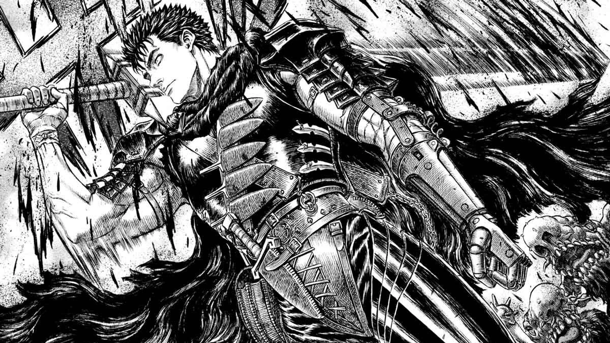
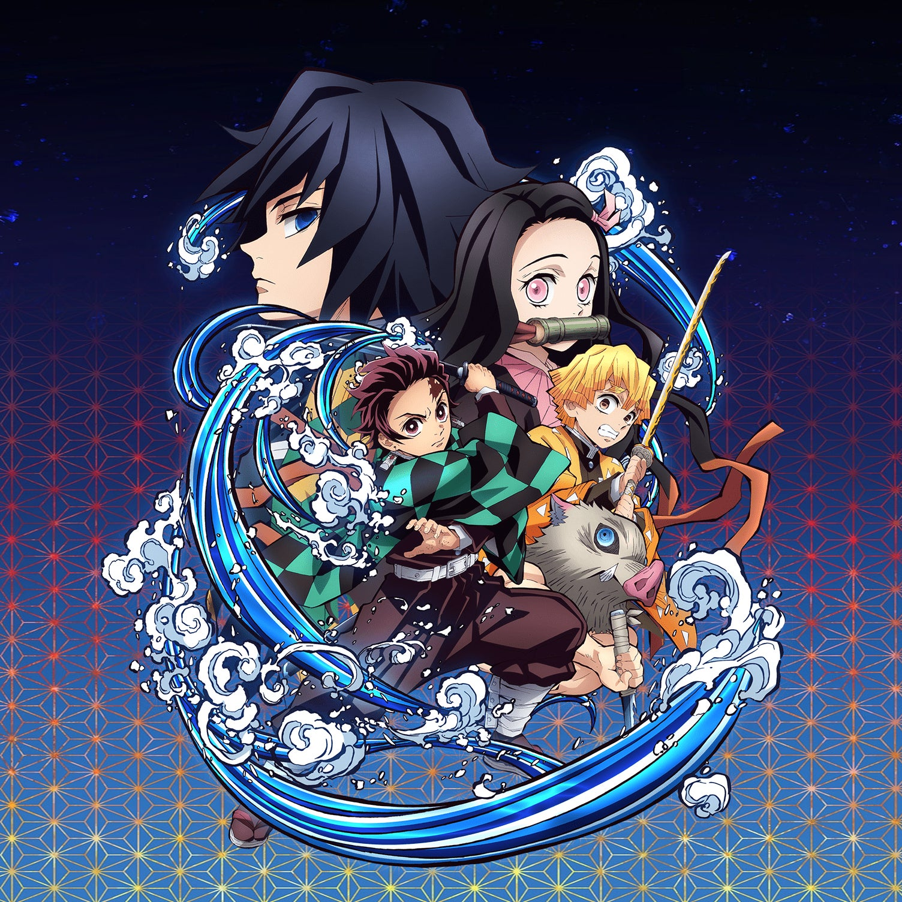
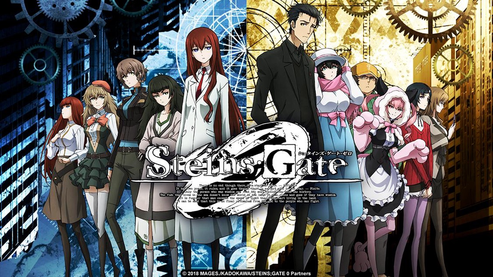

Without a doubt, anime has become very popular around the world, especially the Western world.
To make sure that we are on the same page, anime is not the same thing as Cartoons. If you
were thinking
that, you'd be giving the anime creators in Japan a huge slap in the face. Fans would know that
anime is so much more than that! In fact, 'anime' (or アニメ) is an
abbreviation for Japanese Animation.
Though it is often considered a children's medium, there are however many other anime series and
movies that cater for all ages.
Reasons for watching Anime
Some basic research on the web will reveal the following salient points for watching anime.
Captivating plot Many people make the argument that anime series actually
have a
much
better story than most of the series you have watched. One reason behind this is that it is
easier to visualise concepts in animation than in real-world movies. An example of such a
captivating plot would be Berserk:

Guts from Berserk
Heed my words, Struggler. Soon a rain of blood, the likes of which you cannot imagine, shall
fall down upon you. It will be a storm of death. But take heed, Struggler. Struggle, endure,
contend. For that alone is the sword of one who defies death. Do not forget these words.
Skull Knight to Guts
Excellent Animation Anime is all about animation. As such, the sky is the
limit to rendering stunning visuals and graphics. There is no need to worry about boring
backgrounds. Recently, the
Demon
Slayer series received critical acclaim for its captivating animation:

Demon Slayer: The Hinokami Chronicles
Expand your imagination Some of the shows feature really amazing concepts and
alternate
universes that stretches your brain. Just when you think it can't get any crazier, there comes
another dose of it. Take for example Steins;Gate:

Steins;Gate
Colorful and Appealing Visuals. One thing that can make anime addicting is
its visual appeal. Some anime are brightly colored and beautifully drawn, which is one reason to
make it worth watching. Violet Evergarden is a stellar example worthy of praise: